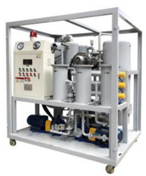

Regenerador de aceite Dielectrico
El principal problema que se debe controlar en un transformador; es el deterioro de su aceite dieléctrico; el cual es una sustancia mineral que tiene como función refrigerar los componentes internos, ser un medio aislante eléctrico y proteger de elementos que degeneran el estado de los bobinados del transformador, como la humedad y la presencia de oxígeno; su degradación permite determinar las condiciones de operación y establecer la vida útil del transformador; razón por la cual es de vital importancia llevar un control sobre el estado del aceite y cumplir periódicamente con mantenimientos preventivos de manera adecuada. A su vez si el aceite dieléctrico del transformador se encuentra en mal estado, se crea la necesidad de sustituirlo; el costo de esta operación dependerá de la cantidad de aceite que contenga el transformador, que para el caso de un transformador de potencia sería muy elevado con relación a su precio original.
Si en tu empresa hay un transformador eléctrico en aceite, entonces necesitas hacerle una regeneración de aceite dieléctrico y ayudar a alargar la vida útil del transformador.
El proceso de regeneración de aceite consiste en el bombeo de aceite a través de una bomba de vacío de alta presión hacia un calentador que separa el aceite de la humedad adquirida a través del tiempo, el aceite separado es filtrado por un filtro secundario hacia un dispositivo de regeneración donde se le agregan químicos de silica gel para cambiar el color y reducir la cantidad de dióxido de carbono. Mientras que la humedad es enfriada, extraída y expulsada al exterior.
La purificación de los bobinados del transformador del sedimento se lleva a cabo haciendo circular el aceite a través de un transformador calentado a una temperatura de anilina superior a la temperatura, cuando el lodo comienza a disolverse en el aceite. Usualmente esta temperatura está dentro de los 80 ° C. La eliminación del sedimento ocurre simultáneamente con la regeneración del aceite. Para eliminar los sedimentos, sólo se debe usar aceite nuevo o regenerado. La purificación de los devanados es posible tanto en el transformador encendido, como apagado. La purificación del transformador toma de 30 a 60 pases a través de la instalación. Cuando se trabaja en un transformador de desconexión, la eficacia de la disolución disminuye debido a la ausencia de oscilación de los devanados, por lo que la purificación lleva más tiempo